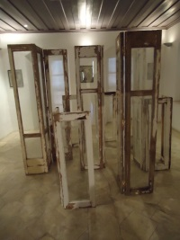

Art Visual Ways
|
Is art a route? An encounter with other people, or with your self? Maybe it's a trip that through it every type of writing captures the meaning of an idea. Of a vision. Of a purpose. Words that cannot be said, are captured easier sometimes on a piece of a paper or on a canvas. Many times it doesn't matter the material. It's enough if it can capture the routes that each person will see with his own eyes. This capture it's a convergence of civilizations; an open window to the world that certifying simple and strongly that art doesn't know about boundaries/limits. Art is the mean of encounter and the route that drives to the convergence or divergence. A meeting that renders the runner receptive to challenges and messages.
|

|
